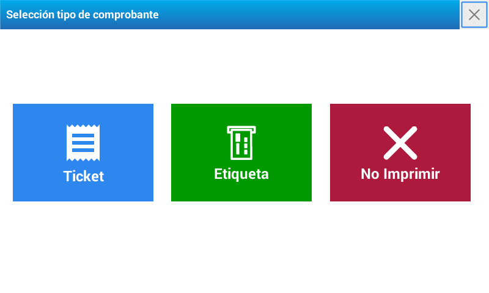

Sale of products
Sale of products on label mode
To execute the sale of a product on label mode, first you must place the label roll.
Once the change is done, you will see on the scale’s screen a box with three options. Select Label

Printing of labels with weighable products.
Select the product using some of the outlined options at Operation - Products
Place the WEIGHT on the platter.
If you need to modify the price, press and enter the new value
Press the key
Printing of labels with non-weighable products.
Select the product using some of the outlined options at Operation - Products
If it is necessary to modify the amount, press and place the corresponding proportion of units.
To change the price, press and enter the product’s value
Press the key
Multiplication of non-weighable products
Enter the amount
Press the key
Then press and enter the price per unit
Wait a moment or press
Press the key
Automatic printing of labels. Pre-Packed Mode
The Pre-Packed Mode is used to label several products of the same type with a same PLU successively, with the minimum intervention from the user.
This mode presents the advantage of keeping the last selected active PLU, so that you only have to place the products on the platter so that the scale will print the label (weighable products).
Moreover, it is important to highlight that the pre-packed mode can be used to label products that are heavy away from the clients’ view (for example, pre-packed products that are placed in the shelves).
Operating mode.
Press to activate the PRE-PACKED function. Then, verify on the screen that the function is activated.
Pre-packed for a weighable product:
Select the product.
Place the product, once it is stable the printing will be printed.
Remove the product, place a different product and a new label will be printed.
Repeat the action as many times as necessary.
Pre-packed for a non-weighable product
Select the product.
The label will be automatically printed.
To print more labels press the key as many times as necessary or choose a new product.
Sale of products on ticket mode
The ticket mode is conceived to make the sale of several products and that the total is printed in only one receipt.
In one ticket, you can see the commercialization of weighable, non-weighable or multiplied non-weighable products.